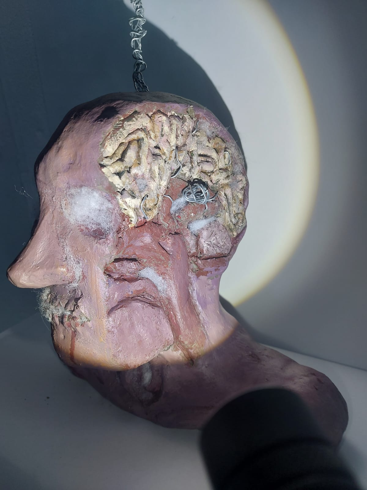
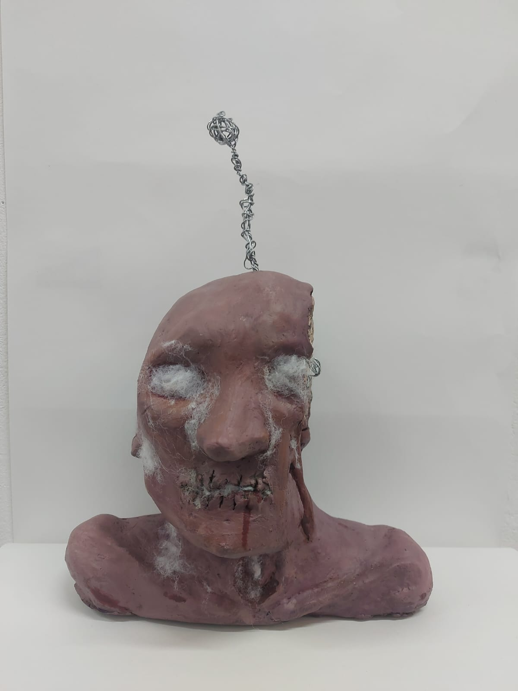

NAME OF ARTWORK: Person Infected With Cordyceps (side)
DATE OF CREATION: 21 / 11 / 2023
MEDIA/STYLE: Realism
DESCRIPTION: This sculpture was a project for college where we could do anything we want as long as it was along the lines of one of these titles: rotting, growing, consumerism, etc. I went with the idea of someone being infected and slowly dying. I was also inspired by one of my favourite games 'The Last Of Us' which is about A cordycep species called Ophiocordyceps unilateralis that is made into a virus by scientist. Which then turns people into bloated zombies releasing spores wherever it walks. I love this idea of something that already existing in the world evolving into something much more lethal. I wanted to explore this process and how it would develop in a person anatomically.
NAME OF ARTWORK: Person Infected With Cordyceps (front)
DATE OF CREATION: 21 / 11 / 2023
MEDIA/STYLE: Realism
DESCRIPTION: This sculpture was a project for college where we could do anything we want as long as it was along the lines of one of these titles: rotting, growing, consumerism, etc. i went with the idea of someone being infected and slowly dying. I was also inspired by one of my favourite games 'The Last Of Us' which is about A cordycep species called Ophiocordyceps unilateralis that is made into a virus by scientist. which then turns people into bloated zombies releasing spores wherever it walks. i love this idea of something that already existing in the world evolving into something much more lethal. I wanted to explore this process and how it would develop in a person anatomically.
